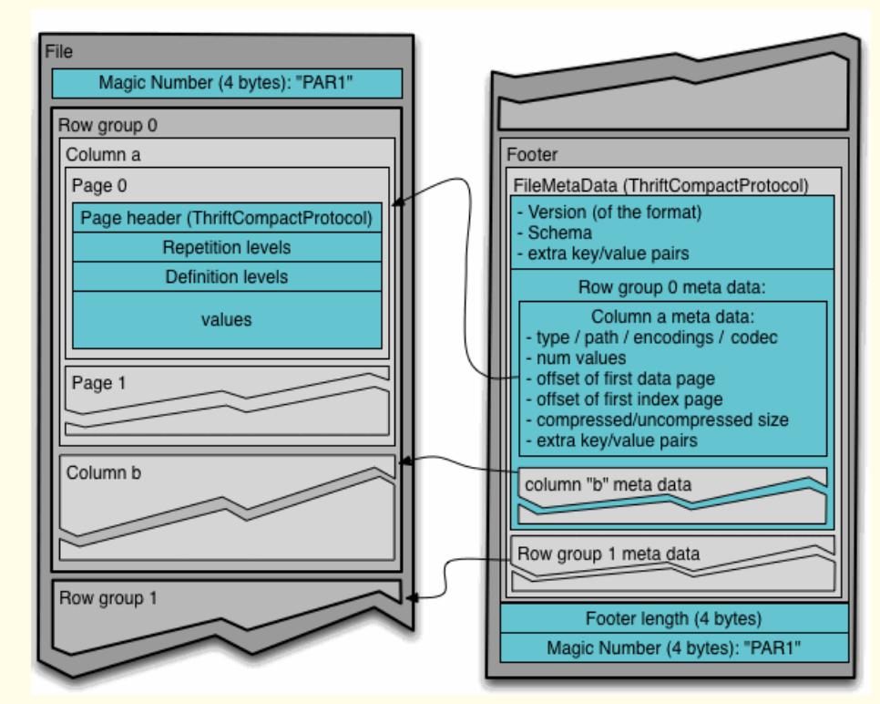
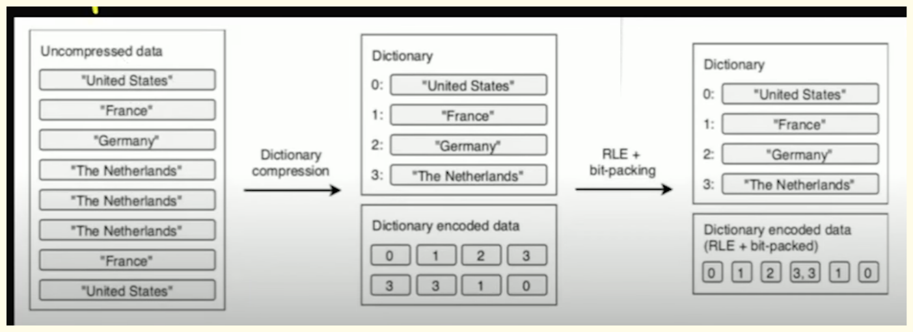
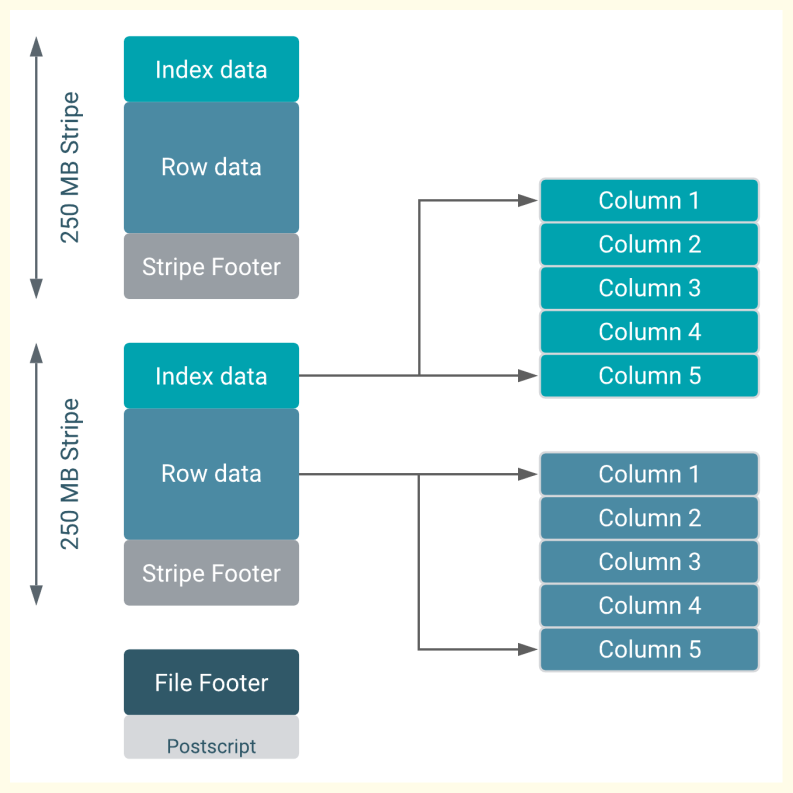
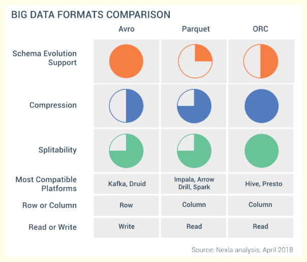

File Formats
How data is stored physically on disk#

Row-based File Formats (e.g., CSV, traditional databases for OLTP):
Data for an entire row is stored contiguously on disk.
When you need all the details of a specific record (e.g., a customer's entire banking transaction), a row-based format allows you to access all its columns continuously. If you need to update multiple columns for a single transaction, the data is already together.
If you only need a few columns (e.g., "Title" and "Chart") from a large dataset, a row-based system still has to read through all the interleaved data (including "Date") for every row. This leads to excessive I/O operations and slower performance because the system has to "jump" across the disk to pick out the desired columns from different rows.
Column-based File Formats (e.g., Parquet for OLAP):
Data for each column is stored contiguously on disk, independent of other columns.
This format shines in "read-many" scenarios prevalent in Big Data analytics. If you only need "Title" and "Chart" columns, the system can go directly to the contiguous "Title" block and "Chart" block, skipping the "Date" column entirely. This significantly reduces I/O, leading to faster query performance and lower computational cost.
If you need to retrieve or update an entire row, the system has to jump between different column blocks to gather all the data for that single row
Parquet#
Columnar storage format, available to any project in the Hadoop ecosystem. It's designed to bring efficient columnar storage of data compared to row-based like CSV or TSV files.
It is columnar in nature and designed to bring efficient columnar storage of data. Provides efficient data compression and encoding schemes with enhanced performance to handle complex data in comparison to row-based files like CSV.
Schema evolution is handled in the file metadata allowing compatible schema evolution. It supports all data types, including nested ones, and integrates well with flat data, semi-structured data, and nested data sources.
Parquet is considered a de-facto standard for storing data nowadays
By applying various encoding and compression algorithms, Parquet file provides reduced memory consumption
In traditional, row-based storage, the data is stored as a sequence of rows. Something like this:
Parquet is a columnar format that stores the data in row groups!
Why is this additional structure super important?
In OLAP scenarios, we are mainly concerned with two concepts: projection and predicate(s).
Projection refers to a SELECT statement in SQL language – which columns are needed by the query.
Predicate(s) refer to the WHERE clause in SQL language – which rows satisfy criteria defined in the query. In our case, we are interested in T-Shirts only, so the engine can completely skip scanning Row group 2, where all the values in the Product column equal socks!
This means, every Parquet file contains “data about data” – information such as minimum and maximum values in the specific column within the certain row group. Furthermore, every Parquet file contains a footer, which keeps the information about the format version, schema information, column metadata, and so on.
While Parquet is primarily columnar, it actually uses a hybrid model to combine the efficiencies of both row and column storage. This hierarchical structure helps manage very large datasets.

Let’s stop for a moment and understand above diagram, as this is exactly the structure of the Parquet file Columns are still stored as separate units, but Parquet introduces additional structures, called Row group.
The structure of a Parquet file can be visualized as a tree
-
File: The top-level entity. It contains metadata about the entire file, such as the number of columns, total rows, and number of row groups.
-
Row Group: This is a logical horizontal partition of the data within the file. Instead of storing all data for a column as one huge block, Parquet breaks the data into smaller, manageable chunks called Row Groups. By default, a row group stores around 128 MB of data. For example, if you have 100 million records, a row group might contain 100,000 records. Each row group also contains metadata, including the minimum and maximum values for each column within that specific row group. This metadata is crucial for optimization.
-
Column (Column Chunk): Inside each row group, data is organized by column. All the data for a specific column within that row group (e.g., all "Title" values for the first 100,000 records) is stored together contiguously.
- Page: This is a further logical partition within a column chunk, where the actual data values are stored. Each page contains its own metadata, which includes information like the maximum and minimum values present on that page.
This hierarchical structure and the abundant metadata at different levels (file, row group, column, page) are what make Parquet highly efficient
Metadata and its Role
Parquet stores a rich set of metadata (data about data) internally. This metadata is a key factor in Parquet's performance advantages:
- File-level metadata: Includes information like the total number of columns, total rows, and the number of row groups.
- Row Group-level metadata: Crucially stores the minimum and maximum values for each column within that row group.
- Page-level metadata: Also contains statistics like minimum and maximum values for data within that specific page. Because of this extensive metadata, when a Parquet file is read, it doesn't need to be given additional parameters like schema information; it already contains all necessary details. This self-describing nature simplifies data processing.
Encoding and Compression Techniques Parquet uses several intelligent encoding and compression techniques to reduce file size and improve query speed without losing information.

-
Encoding: These techniques transform data into a more compact format before compression.
Dictionary Encoding:
Used for columns with many repeating values (low cardinality), like "Destination Country Name" where there might be millions of records but only ~200 distinct countries. Parquet identifies the distinct values in a column and creates a dictionary (a mapping) where each distinct value is assigned a small integer code (e.g., 0 for "United States," 1 for "France," etc.). The actual data in the column is then stored as these compact integer codes instead of the full strings. When reading, Parquet uses the dictionary to convert the codes back to the original values. This drastically reduces storage space.
Run Length Encoding (RLE):
Used for sequences of repeating values. Instead of storing "AAAAABBCD," RLE would store "A5B2C1D1" (A appears 5 times, B 2 times, etc.). This makes the data much smaller, especially for columns with many consecutive identical values.
Bit Packing:
Optimizes storage at the bit level. If a column's values (after dictionary encoding) only range from 0 to 3, these values can be stored using just 2 bits per value (00, 01, 10, 11) instead of the standard 8 bits (1 byte) or more. This significantly reduces the byte size required to store each value.
-
Compression: After encoding, Parquet applies compression algorithms to further reduce the file size. Common compression codecs include Gzip, Snappy, and LZ4. The choice of compression can impact performance. For example, Snappy is often much faster for reads than Gzip, even if Gzip provides slightly better compression ratios. The source states that a query running in 3000 seconds with Gzip might run in just 29 seconds with Snappy, making it 100 times faster
Optimization Techniques in Parquet
The combination of columnar storage, hierarchical structure, rich metadata, and intelligent encoding/compression enables two powerful optimization techniques.
-
Predicate Pushdown (Filter Pushdown): This technique uses the row group-level metadata (min/max values for each column) to skip scanning entire row groups that cannot possibly satisfy a query's filter condition.
Example: Consider a query SELECT * FROM table WHERE age < 18.
Parquet will first check the metadata of each row group.If a row group's metadata indicates that its age column has a minimum value of 22 and a maximum value of 35, Parquet immediately knows that this row group cannot contain any data where age < 18.
Therefore, the system discards that entire row group without reading any of its data from disk. This saves significant I/O, CPU utilization, time, and cost.
This optimization also works with equality checks (e.g., WHERE age = 18) by checking if 18 exists in the row group's dictionary (if dictionary encoding is used) or falls within its min/max range.
-
Projection Pruning: This technique capitalizes on Parquet's columnar storage by only reading the columns that are explicitly required by the query.
Example: If a query is SELECT name, age FROM users, Parquet will only read the name and age column data from disk and completely skip reading any other columns like address, phone_number, etc.. Since columns are stored separately, this is highly efficient as it avoids bringing unnecessary data into memory, reducing I/O and processing load
ORCFile (Optimized Row Columnar File)#
Introduced by Hortonworks, ORC is a highly efficient way to store Hive data. It provides efficient compression and encoding schemes with enhanced performance to handle complex data types.
Built for the Hive query engine, ORC is a columnar storage format that allows Hive to read, write, and process data faster. It allows for efficient compression, which saves storage space, and adds improvements in the speed of data retrieval, making it suitable for performing high-speed queries. It stores collections of rows, not individual rows. Each file consists of row index, column statistics, and stripes (a row of data consisting of several rows) that contain the column data.
Supports complex types: Structs, Lists, Maps, and Unions. Also supports advanced features like bloom filters and indexing. A bloom filter is a data structure that can identify whether an element might be present in a set, or is definitely not present. In the context of ORC, bloom filters can help skip unnecessary reads when performing a lookup on a particular column value.
An ORC file contains groups of row data called stripes, along with auxiliary information in a file footer. At the end of the file a postscript holds compression parameters and the size of the compressed footer. The default stripe size is 250 MB. Large stripe sizes enable large, efficient reads from HDFS. The file footer contains a list of stripes in the file, the number of rows per stripe, and each column's data type. It also contains column-level aggregates count, min, max, and sum.

Strip structure: As shown in the diagram, each stripe in an ORC file holds index data, row data, and a stripe footer. ORC organizes data for each column into streams, the stripe footer records the location and size of these streams within the stripe. This allows the reader to locate and access specific parts of the stripe efficiently. Row data is used in table scans. Index data includes min and max values for each column and the row positions within each column. Row index entries provide offsets that enable seeking to the right compression block and byte within a decompressed block. Note that ORC indexes are used only for the selection of stripes and row groups and not for answering queries.
AVRO#
It's a row-oriented format that is highly splittable.
It also supports schema evolution - you can have Avro data files where each file has a different schema but all are part of the same table.
-
Schema-Based: Avro uses a schema to define the structure of the data. The schema is written in JSON and is included in the serialized data, allowing data to be self-describing and ensuring that the reader can understand the data structure without external information.
-
Compact and Fast: Avro data is serialized in a compact binary format, which makes it highly efficient in terms of both storage and transmission.
-
Compression: Avro supports various compression codes such as Snappy, Deflate, Bzip2, Xz
-
Schema Evolution: Avro supports schema evolution, allowing the schema to change over time without breaking compatibility with old data. This is particularly useful in big data environments where data structures might evolve.
-
Rich Data Structures: Avro supports complex data types, including nested records, arrays, maps, and unions, allowing for flexible and powerful data modelling.
-
Interoperability: Avro is designed to work seamlessly with other big data tools and frameworks, especially within the Hadoop ecosystem, such as Apache Hive, Apache Pig, and Apache Spark.
-
Language Agnostic: Avro has libraries for many programming languages, including Java, C, C++, Python, and more, enabling cross-language data exchange.

ORC vs Parquet vs AVRO#

--- How to decide which file format to choose?
-
Columnar vs Row-based: Columnar storage like Parquet and ORC is efficient for read-heavy workloads and is especially effective for queries that only access a small subset of total columns, as it allows skipping over non-relevant data quickly. Row-based storage like Avro is typically better for write-heavy workloads and for queries that access many or all columns of a table, as all of the data in a row is located next to each other.
-
Schema Evolution: If your data schema may change over time, Avro is a solid choice because of its support for schema evolution. Avro stores the schema and the data together, allowing you to add or remove fields over time. Parquet and ORC also support schema evolution, but with some limitations compared to Avro.
-
Compression: Parquet and ORC, being columnar file formats, allow for better compression and improved query performance as data of the same type is stored together. Avro also supports compression but being a row-based format, it might not be as efficient as Parquet or ORC.
-
Splittability: When compressed, splittable file formats can still be divided into smaller parts and processed in parallel. Parquet, ORC, and Avro are all splittable, even when compressed.
-
Complex Types and Nested Data: If your data includes complex nested structures, then Parquet is a good choice because it provides efficient encoding and compression of nested data.